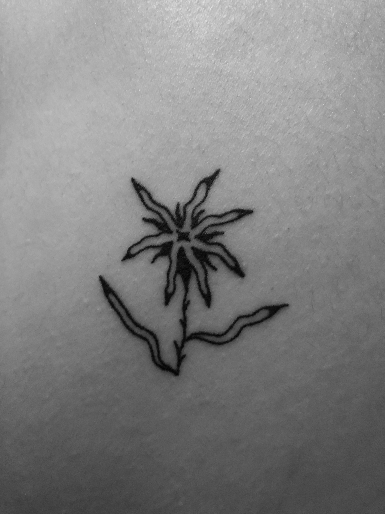

Abstract Flower
Abstract Flower
TATTOO FOUR
Name - Jess Gooding
Tattoo and placement - Flower on the lower right shoulder blade.
How old are you? - 20 years old.
How old were you when you got this tattoo? - 20 years old. On my twentieth birthday!
How many tattoos do you have in total? - 4
How much did it cost you? - $70
Where did you get it done? - Bandit studios by Meaty world (a beautiful man with even more beautiful tattoos).
How long did it take? - 45 minutes.
How impulsive was it? - Fairly, I considered it for a few months.
Does this tattoo have a meaning behind it? - No meaning.
Is it your own artwork? - No, it’s Nick’s (Meaty worlds) artwork.
BACK BACK BACK BACK BACK BACK BACK BACK
